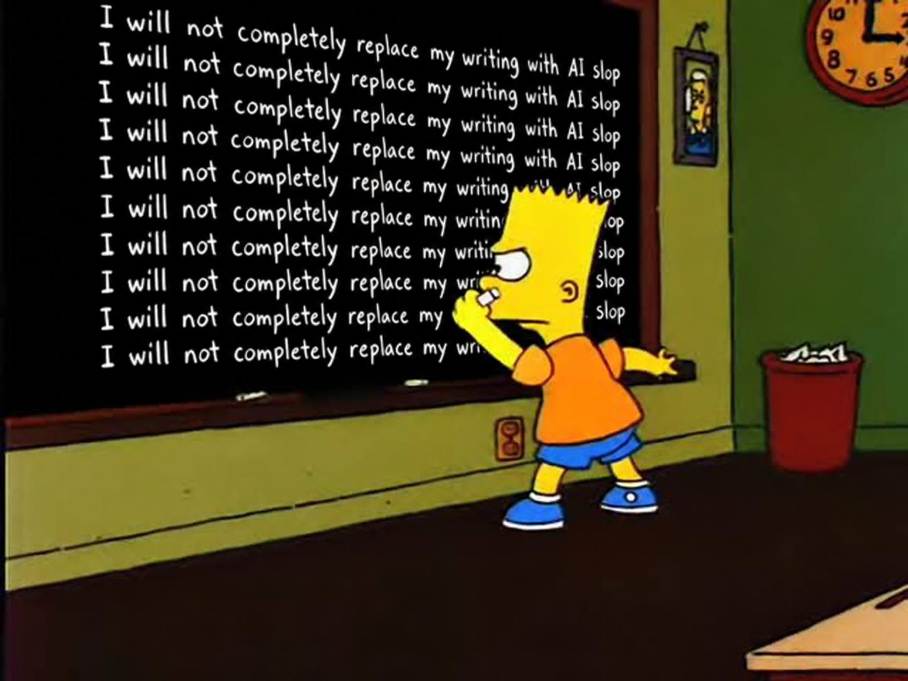
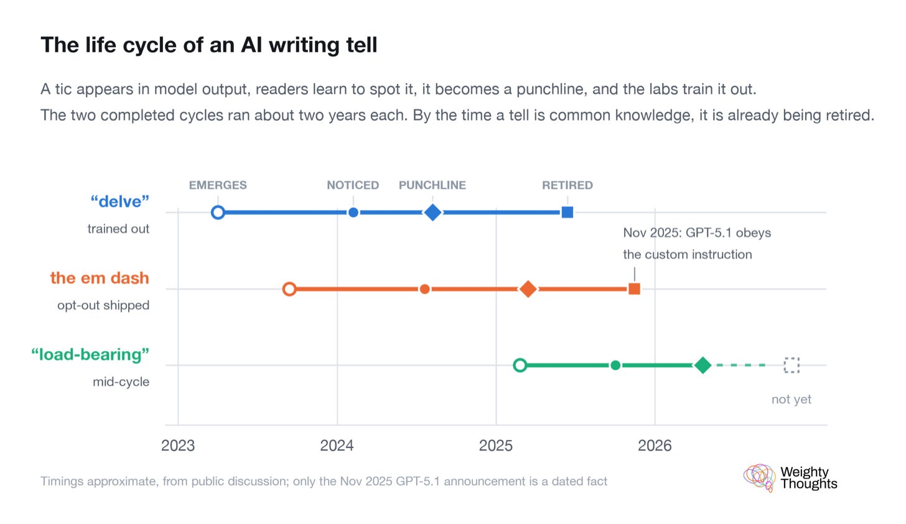
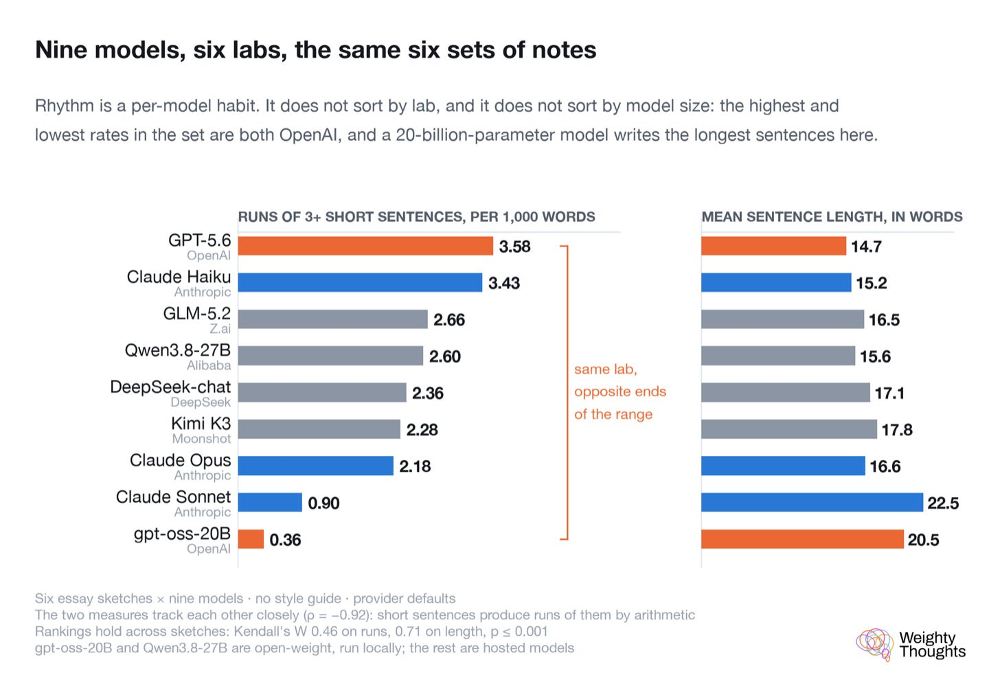
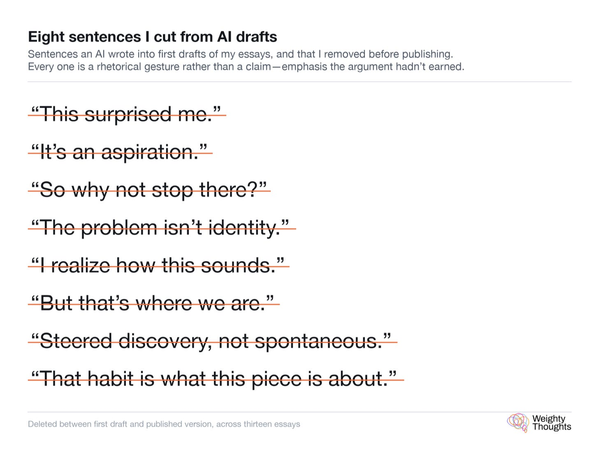
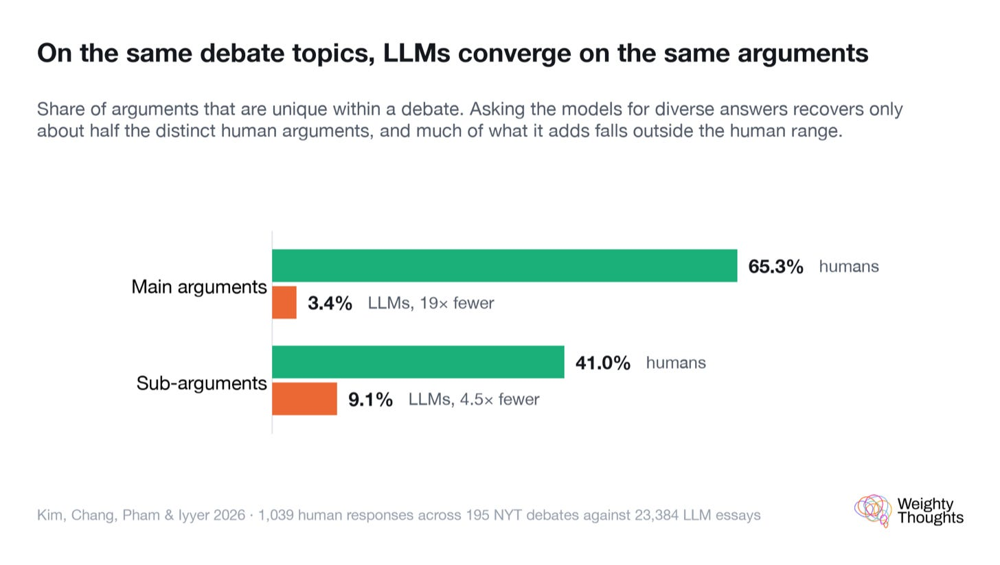
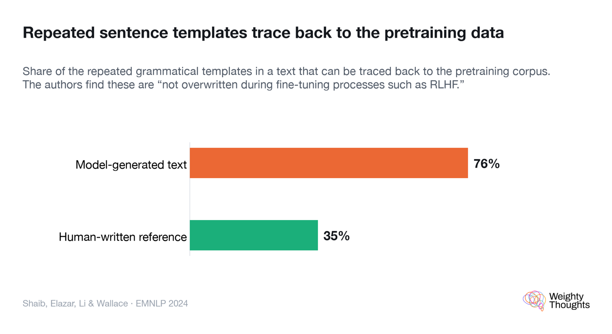
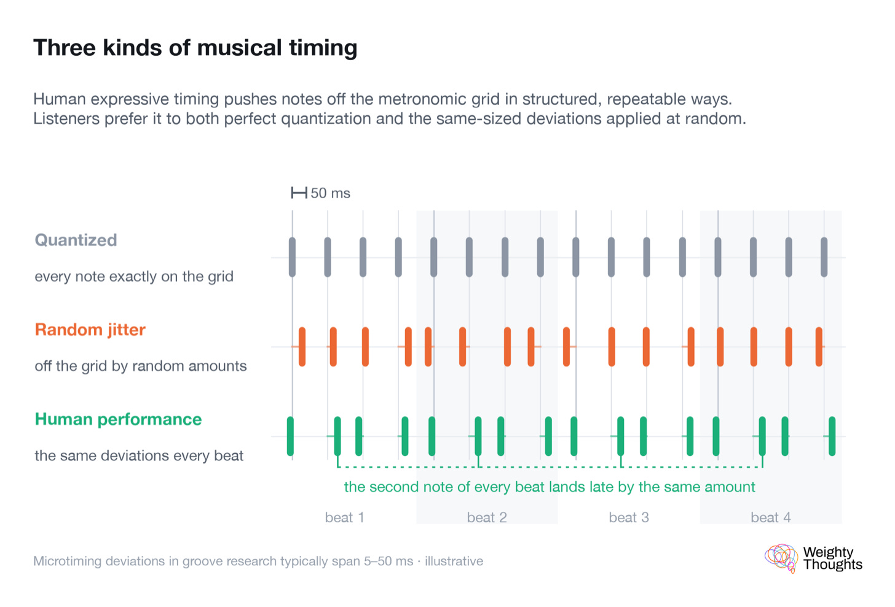

Why Is AI Bad at Writing?
📝 12 annotationsWhy Is AI Bad at Writing?
And Why It'll Likely Stay That Way—Em Dashes or Not!

Have you ever eaten a dish where the flavor was all there but the texture was just… off? Maybe it's perfectly seasoned, but the mouthfeel is gritty or somehow wrong. Texture matters for good food.
That's often my feeling when reading completely AI-generated content, even if the underlying content is decent.
An experienced and prolific author recently described to me the process of composing words as similar to composing music. There's a rhythm and flow to it. I agree. This "rhythm" is hard to quantitatively measure. But we tend to know it when we see it.
Humans are very good at spotting "unnatural" things, especially those that imitate humans. This is the entire origin of the uncanny valley, where hyperrealistic robots or animations mimicking humans feel off-putting to us, and we can intuitively catch the tiniest mismatches.
What is it about AI writing exactly?
In line with societal angst about AI, especially in writing and publishing circles, people talk about how much they hate AI writing. Pangram's rollout on Substack has created mini-witch hunts, and influencers like Hank Green who are accused of using AI face being "cancelled."
None of this actually describes what is wrong with AI writing, though. Being AI is sufficient to hate it.
As longtime readers know, that's not my stance. Although I didn't use AI at all in my book (publisher requirement, plus it was too early in 2022 and 2023 to have AI be useful even as a research assistant), I've been transparent about AI use before it was cool and tried to see how far I can push it in my Substack.
The answer to its usefulness is quite mixed. It never gets anywhere close to passing the bar on its own and basically gets totally rewritten—enough so that even when I use AI, usually Claude, to do a first draft, it never comes up as AI writing on Pangram.
As a side note: I pretty much entirely stopped having AI try its hand at a first draft. I always ended up changing it so much that, for now, it is far easier just to do it myself.
What it is not
The typical hallmarks of AI, like the oft-complained-about em dash—which I will never give up—tend to be poor indicators. That should make sense. If something is so obvious, the next model version will inevitably remove it.
Additionally, you get a lot of variation just by using different models. They don't all write the same. While they all do feel like AI to me, there's no static characteristic that's simple to measure.

AI tell lifecycle — indicators come and go with each model version

Cross-lab comparison of AI writing patterns
What it is—at least for now
Again, it's really, really hard to precisely say what creates the AI writing uncanny valley. I expect that whatever metrics one comes up with will expire in a year or two—either simply by model progress or by deliberate action from the AI labs.
Usually, the reason is this kind of short sentence—"mic drop" (as I call it)—is meant to emphasize the climax of an argument. Claude, in particular, loves to put mic drops everywhere. And, of course, if everything is emphasized, nothing is emphasized.

Claude's love of "mic drop" short sentences — emphasis everywhere = emphasis nowhere
But broadly speaking, all of them tend to have similar "rhythmic" issues stemming from the fact that they are token generators. For the same reason there's context rot—where LLMs get dumber the longer you chat with them—LLMs inevitably have limitations in being able to perfectly track long writing in the way a human would.
LLMs tend to converge on similar arguments. After all, their training set is similar because they all just ate the internet. Additionally, their sentences, as one would expect, are templates which also all resemble one another more than human sentences do.

LLMs converge on similar arguments — low uniqueness vs human writing

Sentence templates: LLMs reuse patterns more than humans
Again, this is a "point in time" metric. I have zero doubt that if this ends up being the main hallmark of AI writing, the labs will find a way to "jitter" sentences to "break" these measurements.
Of course, breaking up this weird templating will likely help make the text feel more human, benchmaxxing or not. Going back to music, it's possible to have musical notes hit exactly at the right timing. This is called quantization. Many music producers, even in electronic music, add in "swing" or simply hand-play certain parts to add the right "imperfection" and make their pieces feel more human.

Microtiming: the gap between quantized and human rhythm
It comes down to semantics. There's a reason why certain rhythms are adopted for certain emphases and emotional impact. Just as true AI or algorithmically generated music often feels "weird" to listeners because the meaning or intent doesn't seem to be there, I do expect that ineffable quality will be a gap for a long, long time in AI writing.
Why Does it Matter?
To some degree, I'm in the camp that I don't care if you use AI if I can't notice it. I say "to some degree," perhaps because, as a writer, I'm more sensitive to the "musical" rhythm of good writing.
If you use AI to do research, so long as you weren't lazy and did the equivalent of "Let me Google That For You" and added something I can trust to my understanding, I'm happy enough. It doesn't matter if you used an encyclopedia, Google, or ChatGPT.
If you draft the piece with AI… but do such extensive edits—similar to my own process with Substack for a while—that it's unrecognizable as AI, I also don't really care.
No matter what, if I'm reading you as an author, I want it to be you as the author. You need to add what makes you you. Otherwise, I could just go to Claude or ChatGPT and just go prompt it myself.
Who is the Author, Exactly?
The concept of authorship is something I wrangled with in my book. My conclusion, between Death of an Author (a totally "ChatGPT written" book), pop artists like Andy Warhol often using assistants to make the "actual art," and the very art form of photography itself… authorship or creative ownership is more about the idea than the tool used to execute it—including AI.
AI Watermarks
Anthropic declared that they'd be using watermarks for AI writing going forward. The relevant AI Act provisions took effect on August 2nd, and per Anthropic's own documentation, models launched on or after that date carry marks at launch.
One is that watermarks, in theory, will degrade the quality of writing. The way you can have "invisible" watermarks is by deliberately introducing certain non-randomness in word choice that can be picked up. Google's own research on the technique concedes it causes "some reduction to inter-response diversity."
The second is worse and has to do with "authorship." Using their models, even if you're doing a copywriting pass purely, you can have Claude "claim ownership" using watermarks.
In the Longer Term
I do think we'll eventually go toward a world in the future where AI use is as incidental as computer use. Basically, you'd find a new employee who comes up to you and says, "I don't use AI," just as weird as one today who comes up to you and says, "Well, I don't really do 'computers'" and hands you a stack of handwritten notes… which you'd likely then need to transcribe into a computer.
If AI can do a lot of the practical stuff better and improve productivity in the world, I'm all for it. That's been the way progress works, from shovels to steam engines to nuclear-powered ships. None of these obsoleted humans; they simply changed the nature of work.
If you think, from the creative side, that AI will simply wipe out humans… well, perhaps you have less faith in humanity than I do.